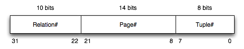

-
What is the purpose of the storage management subsystem of a DBMS?
[show answer]
The primary purpose of the storage manager is to organise the
persistent storage of the DBMS's data and meta-data, typically
on a disk device.
The storage manager contains a mapping from user-level database objects
(such as tables and tuples) to files and disk blocks.
Its primary functions are performing the mapping from objects to files
and transferring data between memory and disk.
-
Describe some of the typical functions provided by the storage management subsystem.
[show answer]
Note that these functions are merely suggestive of the kinds of functions that
might appear in a storage manager. They bear no relation to any real DBMS (and
they are not drawn from the PostgreSQL storage manager, although similar kinds
of functions will be found there).
The function descriptions could have been less detailed, but I thought it was
worth mentioning some typical data types as well.
Some typical storage management functions ...
- RelnDescriptor *openRelation(char *relnName)
- initiates access to a named table/relation
- determines which files correspond to the named table
- sets up a data structure (RelnDescriptor) to manage access to those files
- the data structure would typically contain file descriptors and a buffer
- DataBlock getPage(TableDescriptor *table, PageId pid)
- fetch the content of the pidth data page from the open table
- DataBlock is a reference to a memory buffer containing the data
- Tuple getTuple(TableDescriptor *table, TupleID tid)
- fetch the content of the pidth tuple from the open table
- Tuple is an in-memory data structure containing the values from the tuple
- this function would typically determine which page contained the tuple, then
call getPage() to retrieve the page, and finally extract the data
values from the page buffer; it may also need to open other files and read
e.g. large data values from them
Other functions might include putPage, putTuple, closeTable,
etc.
-
[Based on Garcia-Molina/Ullman/Widom 13.6.1]
Consider a disk with the following characteristics:
- 8 platters, 16 read/write surfaces
- 16,384 (214) tracks per surface
- On average, 128 sectors/blocks per track (min: 96, max: 160)
- 4096 (212) bytes per sector/block
If we represent record addresses on such a disk by allocating
a separate byte (or bytes) to address the surface, the track,
the sector/block, and the byte-offset within the block,
how many bytes do we need?
How would the answer differ if we used bit-fields, used the
minimum number of bits for each address component, and packed
the components as tightly as possible?
[show answer]
Number of bytes required to address the disk if all address components
are multiples of whole bytes:
- 16 surfaces requires 4 bits or 1 byte
- 16,384 tracks requires 14 bits or 2 bytes
- need to use max sectors/track, so 160 sectors requires 8 bits or 1 byte
- 4,096 bytes per sector/block requires 12 bits or 2 bytes
Thus, the total number of bytes required is 1+2+1+2 = 6 bytes.
If we use minimum bits, we require 4+14+8+12 = 38 bits = 5 bytes
-
The raw disk addresses in the first question are very low level.
DBMSs normally deal with higher-level objects than raw disk blocks,
and thus use different kinds of addresses, such as PageIds
and TupleIds.
Consider a DBMS where TupleIDs are defined as 32-bit quantities
consisting the following:

Write C functions to extract the various components from a TupleId
value:
typedef unsigned int BitString;
typedef BitString TupleId;
BitString relNum(Tuple id) { ... }
BitString pageNumFrom(Tuple id) { ... }
BitString recNumFrom(Tuple id) { ... }
[show answer]
Requires the use of C's bit operators, and use a mask to extract just the
relevant bits and a shift to ensure that the relevant bits are in the
low-order position:
#define relNumMask 0x000003ff /* 10 bits */
#define pageNumMask 0x00003fff /* 14 bits */
#define recNumMask 0x000000ff /* 8 bits */
BitString relNum(TupleId id) { return ((id >> 22) & relNumMask); }
BitString pageNumFrom(TupleId id) { return ((id >> 8) & pageNumMask); }
BitString recNumFrom(TupleId id) { return (id & recNumMask); }
These are probably better done as #define macros.
-
Consider executing a nested-loop join on two small tables
(R, with bR=4,
and S, with bS=3)
and using a small buffer pool (with 3 initially unused buffers).
The pattern of access to pages is determined by the following algorithm:
for (i = 0; i < bR; i++) {
rpage = request_page(R,i);
for (j = 0; j < bS; j++) {
spage = request_page(S,j);
process join using tuples in rpage and spage ...
release_page(S,j);
}
release_page(R,i);
}
Show the state of the buffer pool and any auxiliary data structures
after the completion of each call to the request or
release functions. For each buffer slot, show the page
that it currently holds and its pin count, using the notation e.g.
R0(1) to indicate that page 0 from table R
is held in that buffer slot and has a pin count of 1.
Assume that free slots are always used in preference to slots that
already contain data, even if the slot with data has a pin count of
zero.
In the traces below, we have not explicitly showed the initial
free-list of buffers. We assume that Buf[0] is at the
start of the list, then Buf[1], then Buf[2].
The allocation method works as follows, for all replacement strategies:
- if the free-list has any buffers, use the first one on the list
- if the free-list is empty, apply the replacement strategy
The trace below shows the first part of the buffer usage for the
above join, using PostgreSQL's clock-sweep replacement strategy.
Indicate each read-from-disk operation by a * in the R
column.
Complete this example, and then repeat this exercise for the LRU
and MRU buffer replacement strategies.
Operation Buf[0] Buf[1] Buf[2] R Strategy data Notes
----------- ------ ------ ------ - ------------- -----
initially free free free NextVictim=0
request(R0) R0(1) free free * NextVictim=0 use first available free buffer
request(S0) R0(1) S0(1) free * NextVictim=0 use first available free buffer
release(S0) R0(1) S0(0) free NextVictim=0
request(S1) R0(1) S0(0) S1(1) * NextVictim=0 use first available free buffer
release(S1) R0(1) S0(0) S1(0) NextVictim=0
request(S2) R0(1) S2(1) S1(0) * NextVictim=2 skip pinned Buf[0], use NextVictim=1, replace Buf[1]
release(S2) R0(1) S2(0) S1(0) NextVictim=2
release(R0) R0(0) S2(0) S1(0) NextVictim=2
request(R1) R0(0) S2(0) R1(1) * NextVictim=0 use NextVictim=2, replace Buf[2], wrap NextVictim
request(S0) ...
release(S2) ...
release(R3) ...
[show answer]
(i)
Buffer usage trace for R join S using Clock-sweep replacement strategy.
Note that the buffer gives us absolutely no benefit in terms of
reducing the number of reads required. It would have been the same
if we'd had just a single input buffer for each table.
Operation Buf[0] Buf[1] Buf[2] R Strategy data Notes
----------- ------ ------ ------ - ------------- -----
initially free free free NextVictim=0
request(R0) R0(1) free free * NextVictim=0 use first available free buffer
request(S0) R0(1) S0(1) free * NextVictim=0 use first available free buffer
release(S0) R0(1) S0(0) free NextVictim=0
request(S1) R0(1) S0(0) S1(1) * NextVictim=0 use first available free buffer
release(S1) R0(1) S0(0) S1(0) NextVictim=0
request(S2) R0(1) S2(1) S1(0) * NextVictim=2 skip pinned Buf[0], use NextVictim=1, replace Buf[1]
release(S2) R0(1) S2(0) S1(0) NextVictim=2
release(R0) R0(0) S2(0) S1(0) NextVictim=2
request(R1) R0(0) S2(0) R1(1) * NextVictim=0 use NextVictim=2, replace Buf[2], wrap NextVictim
request(S0) S0(1) S2(0) R1(1) * NextVictim=1 use NextVictim=0, replace Buf[0]
release(S0) S0(0) S2(0) R1(1) NextVictim=1
request(S1) S0(0) S1(1) R1(1) * NextVictim=2 use NextVictim=1, replace Buf[1]
release(S1) S0(0) S1(0) R1(1) NextVictim=2
request(S2) S2(1) S1(0) R1(1) * NextVictim=1 skip pinned Buf[2], use NextVictim=0, replace Buf[0]
release(S2) S2(0) S1(0) R1(1) NextVictim=1
release(R1) S2(0) S1(0) R1(0) NextVictim=1
request(R2) S2(0) R2(1) R1(0) * NextVictim=2 use NextVictim=1, replace Buf[1]
request(S0) S2(0) R2(1) S0(1) * NextVictim=0 use NextVictim=2, replace Buf[2], wrap NextVictim
release(S0) S2(0) R2(1) S0(0) NextVictim=0
request(S1) S1(1) R2(1) S0(0) * NextVictim=1 use NextVictim=0, replace Buf[0]
release(S1) S1(0) R2(1) S0(0) NextVictim=1
request(S2) S1(0) R2(1) S2(1) * NextVictim=0 skip pinned Buf[1], use NextVictim=2, replace Buf[2]
release(S2) S1(0) R2(1) S2(0) NextVictim=0
release(R2) S1(0) R2(0) S2(0) NextVictim=0
request(R3) R3(1) R2(0) S2(0) * NextVictim=1 use NextVictim=0, replace Buf[0]
request(S0) R3(1) S0(1) S2(0) * NextVictim=2 use NextVictim=1, replace Buf[1]
release(S0) R3(1) S0(0) S2(0) NextVictim=2
request(S1) R3(1) S0(0) S1(1) * NextVictim=0 use NextVictim=2, replace Buf[2], wrap NextVictim
release(S1) R3(1) S0(0) S1(0) NextVictim=0
request(S2) R3(1) S2(1) S1(0) * NextVictim=2 skip pinned Buf[0], use NextVictim=1, replace Buf[1]
release(S2) R3(1) S2(0) S1(0) NextVictim=2
release(R3) R3(0) S2(0) S1(0) NextVictim=2
(ii)
Buffer usage trace for R join S using LRU replacement strategy.
Note that the least recently used buffer is always at the front of the LRU list.
As in the clock=sweep case, the replacement strategy gives no re-use of
loaded pages; the number of reads is the same as if we had one input buffer
for each relation.
Operation Buf[0] Buf[1] Buf[2] R Strategy data
----------- ------ ------ ------ - -------------
initially free free free LRU: empty
request(R0) R0(1) free free * LRU: empty
request(S0) R0(1) S0(1) free * LRU: empty
release(S0) R0(1) S0(0) free LRU: Buf[1]
request(S1) R0(1) S0(0) S1(1) * LRU: Buf[1]
release(S1) R0(1) S0(0) S1(0) LRU: Buf[1] Buf[2]
request(S2) R0(1) S2(1) S1(0) * LRU: Buf[2]
release(S2) R0(1) S2(0) S1(0) LRU: Buf[2] Buf[1]
release(R0) R0(0) S2(0) S1(0) LRU: Buf[2] Buf[1] Buf[0]
request(R1) R0(0) S2(0) R1(1) * LRU: Buf[1] Buf[0]
request(S0) R0(0) S0(1) R1(1) * LRU: Buf[0]
release(S0) R0(0) S0(0) R1(1) LRU: Buf[0] Buf[1]
request(S1) S1(1) S0(0) R1(1) * LRU: Buf[1]
release(S1) S1(0) S0(0) R1(1) LRU: Buf[1] Buf[0]
request(S2) S1(0) S2(1) R1(1) * LRU: Buf[0]
release(S2) S1(0) S2(0) R1(1) LRU: Buf[0] Buf[1]
release(R1) S1(0) S2(0) R1(0) LRU: Buf[0] Buf[1] Buf[2]
request(R2) R2(1) S2(0) R1(0) * LRU: Buf[1] Buf[2]
request(S0) R2(1) S0(1) R1(0) * LRU: Buf[2]
release(S0) R2(1) S0(0) R1(0) LRU: Buf[2] Buf[1]
request(S1) R2(1) S0(0) S1(1) * LRU: Buf[1]
release(S1) R2(1) S0(0) S1(0) LRU: Buf[1] Buf[2]
request(S2) R2(1) S2(1) S1(0) * LRU: Buf[2]
release(S2) R2(1) S2(0) S1(0) LRU: Buf[2] Buf[1]
release(R2) R2(0) S2(0) S1(0) LRU: Buf[2] Buf[1] Buf[0]
request(R3) R2(0) S2(0) R3(1) * LRU: Buf[1] Buf[0]
request(S0) R2(0) S0(1) R3(1) * LRU: Buf[0]
release(S0) R2(0) S0(0) R3(1) LRU: Buf[0] Buf[1]
request(S1) S1(1) S0(0) R3(1) * LRU: Buf[1]
release(S1) S1(0) S0(0) R3(1) LRU: Buf[1] Buf[0]
request(S2) S1(0) S2(1) R3(1) * LRU: Buf[0]
release(S2) S1(0) S2(0) R3(1) LRU: Buf[0] Buf[1]
release(R3) S1(0) S2(0) R3(0) LRU: Buf[0] Buf[1] Buf[2]
(iii)
Buffer usage trace for R join S using MRU replacement strategy.
Note that the most recently used buffer is always at the front of the MRU list. A buffer is removed from the MRU list when it is use, either because of
a "hit" or because of it being re-allocated to a different page.
In this case, the buffering does actually bring some benefits.
Some reads are avoided by "hits" on the buffer.
Operation Buf[0] Buf[1] Buf[2] R Strategy data
----------- ------ ------ ------ - -------------
initially free free free MRU: empty
request(R0) R0(1) free free * MRU: empty
request(S0) R0(1) S0(1) free * MRU: empty
release(S0) R0(1) S0(0) free MRU: Buf[1]
request(S1) R0(1) S0(0) S1(1) * MRU: Buf[1]
release(S1) R0(1) S0(0) S1(0) MRU: Buf[2] Buf[1]
request(S2) R0(1) S0(0) S2(1) * MRU: Buf[1]
release(S2) R0(1) S0(0) S2(0) MRU: Buf[2] Buf[1]
release(R0) R0(0) S0(0) S2(0) MRU: Buf[0] Buf[2] Buf[1]
request(R1) R1(1) S0(0) S2(0) * MRU: Buf[2] Buf[1]
request(S0) R1(1) S0(1) S2(0) MRU: Buf[2] Hit!
release(S0) R1(1) S0(0) S2(0) MRU: Buf[1] Buf[2]
request(S1) R1(1) S1(1) S2(0) * MRU: Buf[2]
release(S1) R1(1) S1(0) S2(0) MRU: Buf[1] Buf[2]
request(S2) R1(1) S1(0) S2(1) MRU: Buf[1] Hit!
release(S2) R1(1) S1(0) S2(0) MRU: Buf[2] Buf[1]
release(R1) R1(0) S1(0) S2(0) MRU: Buf[0] Buf[2] Buf[1]
request(R2) R2(1) S1(0) S2(0) * MRU: Buf[2] Buf[1]
request(S0) R2(1) S1(0) S0(1) * MRU: Buf[1]
release(S0) R2(1) S1(0) S0(0) MRU: Buf[2] Buf[1]
request(S1) R2(1) S1(1) S0(0) MRU: Buf[2] Hit!
release(S1) R2(1) S1(0) S0(0) MRU: Buf[1] Buf[2]
request(S2) R2(1) S2(1) S0(0) * MRU: Buf[2]
release(S2) R2(1) S2(0) S0(0) MRU: Buf[1] Buf[2]
release(R2) R2(0) S2(0) S0(0) MRU: Buf[0] Buf[1] Buf[2]
request(R3) R3(1) S2(0) S0(0) * MRU: Buf[1] Buf[2]
request(S0) R3(1) S2(0) S0(1) MRU: Buf[1] Hit!
release(S0) R3(1) S2(0) S0(0) MRU: Buf[2] Buf[1]
request(S1) R3(1) S2(0) S1(1) * MRU: Buf[1]
release(S1) R3(1) S2(0) S1(0) MRU: Buf[2] Buf[1]
request(S2) R3(1) S2(1) S1(0) MRU: Buf[2] Hit!
release(S2) R3(1) S2(0) S1(0) MRU: Buf[1] Buf[2]
release(R3) R3(0) S2(0) S1(0) MRU: Buf[0] Buf[1] Buf[2]
It would be interesting to repeat the above exercises with a larger
buffer pool.
I would not recommend trying this manually. It would be quicker to
write a program to show buffer traces for the different strategies,
and the program could also (a) let you work with larger tables, and
(b) accumulate statistics on buffer usage.
-
[Based on GUW Ex.15.7.1]
Consider executing a join operation on two tables R and S.
A pool of N buffers is available to assist with the execution of
the join.
In terms of N, bR and bS, give
the conditions under which we can guarantee that the tables can be
joined in a single pass (i.e. each page of each table is read exactly
once).
Assume that the join here results in writing result tuples, unlike the
previous question, so you need one output buffer as well as input buffers.
[show answer]
For a one-pass join, one of the relations must fit entirely in the buffer
pool.
We also need room to read one page (at a time) from the other relation
and another buffer to hold output tuples.
In other words, we need min(bR,bS) <= N-2
-
Consider the execution of a binary search on the sort key in a file
where b=100.
Assume that the key being sought has a value in the middle of the
range of values in the data page with index 52.
Assume also that we have a buffer pool containing only 2 pages
both of which are initially unused.
Show the sequence of reads and replacements in the buffer pool
during the search, for each of the following page replacement
strategies:
first-in-first-out
most-recently-used
Use the following notation for describing the sequence of buffer
pool operations, e.g.
request for page 3
placed in buffer 0
request for page 9
placed in buffer 1
request for page 14
placed in buffer 0 (page 3 replaced)
request for page 19
placed in buffer 1 (page 9 replaced)
Assuming that this is the only process active in the system,
does the buffering achieve any disk i/o savings in either case?
[show answer]
The first thing to determine is the sequence of page accesses
that will occur. This is simple enough, given what we know about
binary search and the location of the matching tuple:
iter lo hi mid
. 0 99 .
1 0 99 49
2 50 99 74
3 50 73 61
4 50 60 55
5 50 54 52
Read the binary search algorithm in the lecture notes if you don't
understand how the sequence of pages was generated.
The only pages actually read (and checked for min/max key values)
are those determined as the mid page on each iteration, i.e.
49 74 61 55 52
-
first-in-first-out
request for page 49
placed in buffer 0
request for page 74
placed in buffer 1
request for page 61
placed in buffer 0 (page 49 replaced)
request for page 55
placed in buffer 1 (page 74 replaced)
request for page 52
placed in buffer 0 (page 69 replaced)
-
most-recently-used
request for page 49
placed in buffer 0
request for page 74
placed in buffer 1
request for page 61
placed in buffer 1 (page 74 replaced)
request for page 55
placed in buffer 1 (page 61 replaced)
request for page 52
placed in buffer 1 (page 55 replaced)
The buffering achieves no savings in disk i/o (since no pages are revisited).
You could have worked this out without needing to run the traces;
each page is accessed once,
and buffering will only be effective if a given page is accessed
multiple times.
-
A commonly used buffer replacement policy in DBMSs is LRU
(least recently used). However, this strategy is not optimal for
some kinds of database operations. One proposal to improve the
performance of LRU was LRU/k, which involved using the
kth most recent access time as the basis for
determining which page to replace. This approach had its own
problems, in that it was more complex to manage the buffer
queue (logN time, rather than constant time). The effect
of the most popular variant of LRU/k, LRU/2, is to
better estimate how hot
is a page (based on more than
just its most recent, and possibly only, access); pages which
are accessed only once recently are more likely to be removed
than pages that have been accessed several times, but perhaps
not as recently.
PostgreSQL 8.0 and 8.1 used a buffer replacement strategy based
on a different approach, called 2Q.
The approach uses two queues of buffer pages: A1 and Am.
When a page is first accessed, it is placed in the A1 queue.
If it is subsequently accessed, it is moved to the Am queue.
The A1 queue is organised as a FIFO list, so that pages that
are accessed only once are eventually removed. The Am queue
is managed as an LRU list. A simple algorithm for 2Q is given
below:
Request for page p:
if (page p is in the Am queue) {
move p to the front (LRU) position in the Am queue
}
else if (page p is in the A1 queue) {
move p to the front (LRU) position in the Am queue
}
else {
if (there are available free buffers) {
B = select a free buffer
}
else if (size of A1 > 2) {
B = buffer at head of A1
remove B from A1
}
else {
B = LRU buffer in Am
remove B from Am
}
allocate p to buffer B
move p to the tail of the A1 queue (FIFO)
}
Using the above algorithm, show the state of the two queues
after each of the following page references:
1 2 1 3 1 2 1 4 2 5 6 4 3 5
To get you started, after the first four references above,
the queues will contain:
A1: 2 3 Am: 1 2 free buffers
Assume that the buffer pool contains 5 buffers,
and that it is initially empty.
Note that the page nearest to A1 is the head of the FIFO queue
(i.e. the next one to be removed according to FIFO), and the
page nearest to Am is the least recently used page in that queue.
Note that PostgreSQL changed to the clock-sweep replacement
strategy in later releases.
[show answer]
State of buffer pools and A1/Am queues during sequence of page accesses:
Request State after request satisfied #Free buffers
initial A1: <empty> Am: <empty> 5
1 A1: 1 Am: <empty> 4
2 A1: 1 2 Am: <empty> 3
1 A1: 2 Am: 1 3
3 A1: 2 3 Am: 1 2
1 A1: 2 3 Am: 1 2
2 A1: 3 Am: 1 2 2
1 A1: 3 Am: 2 1 2
4 A1: 3 4 Am: 2 1 1
2 A1: 3 4 Am: 1 2 1
5 A1: 3 4 5 Am: 1 2 0
6 A1: 4 5 6 Am: 1 2 0
4 A1: 5 6 Am: 1 2 4 0
3 A1: 5 6 3 Am: 2 4 0
5 A1: 6 3 Am: 2 4 5 0
-
Challenge Problem: (no solution provided)
Write a program that simulates the behaviour of a buffer pool.
It should take as command-line arguments:
- the number of buffers (an integer value, larger than 2)
- the replacement strategy (one of clock, lru, mru)
It should then read from standard input a sequence of page
references, one per line, in the form:
where T is a table name and n is a page number
The output of the program should be a trace of buffer states
in a format similar to that used in Question 8.
Also, collect statistics on numbers of requests, releases,
reads and writes and display these at the end of the trace.
Since generating long and meaningful sequences of requests and releases
is tedious, you should also write programs to generate such sequences.
The pseudo-code in Question 8 gives an idea of what the core of
such a program would look like for a join on two tables.